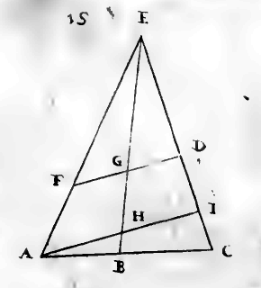

Propositio XII · Problema IX¶


PROP. XII. PROB. IX. (tab. 2. fig. 15.)
Exposita tertij elementi figura, ex quinque verò rationibus, de quibus in ipso elemento egimus, datis tribus quibuscunque oporteat reliquas duas manifestare.
Huius problematis sunt decem casus; nàm numerus quinque resoluitur in decem numeros binarios; ducto siquidem 5 in 4 fit 20, cuius medietas est 10.
Sint primùm datae tres rationes AF ad FE, vt 3 ad 4, BG ad GE aequalitatis, & CD ad DE, vt 5 ad 4, debemus reliquas duas inuestigare, hoc est FG ad GD, & AB ad BC; & quia in hoc casu tantùm non debet AC esse parallela FD, ducamus à puncto A parallelam AHI.
Quoniam BG ad GH componitur ex ratione BG ad GE, & GE ad GH; estque GE ad GH, vt EF ad FA; erit BG ad GH composita ex rationibus BG ad GE, & EF ad FA, videlicet ex rationibus 4 ad 4, & 4 ad 3; & ideò BG ad GH erit vt 4 ad 3; & diuidendo, BH ad HG, vt 1 ad 3; sed HG ad HE est vt 3 ad 7; ergo ex aequali BH ad HE erit vt 1 ad 7. Rursus CD ad DI componitur ex proportionibus CD ad DE ad DI; sed ED ad DI est vt EF ad FA; ergo CD ad DI composita est ex rationibus CD ad DE, & EF ad FA, imò ex rationibus 5 ad 4, & 4 ad 3; CD ad DI est vt 5 ad 3; & diuidendo, CI ad ID, vt 2 ad 3; ID verò ad IE, hoc est AF ad FE, vt 3 ad 7; igitur ex aequali, vt CI ad IE, ita 2 ad 7; cum igitur in figura primi elementi, cuius vertex C, & centrum H, datae sint duae rationes CI ad IE, vt 2 ad 7, & BH ad HE, vt 1 ad 7; etiam duae reliquae palàm fient, hoc est IH ad HA, vt 7 ad 9, & CB ad BA aequalitatis; vt verò IH ad HA, ita DG ad GF; ergo dedimus reliquas duas rationes FG ad GD, vt 9 ad 7, & CB ad BA, vt 1 ad 1, videlicet aequalitatis.
f. 0036 · p. 19In inferiori figura eiusdem tertij elementi dentur tres rationes CD ad DE, vt 7 ad 4; CB ad BA, vt 2 ad 4; & DG ad GF, vt 5 ad 11, oportet reliquas duas rationes AF ad FE, & EG ad GB aperire.
Componitur proportio EA ad EF, ponderis nempè F ad A ex proportionibus ponderum F ad D ad C ad A; rectarum videlicet DG ad GF, EC ad ED, & AB ad BC; ex rationibus nimirum 5 ad 11 ad 4 ad 2; quare EA ad EF est vt 5 ad 2, diuidendoque, erit AF ad FE, vt 3 ad 2.
Rursus EB ad EG, hoc est pondus G ad B componitur ex proportionibus ponderum G ad D ad C ad B, rectarum videlicet DF ad FG, EC ad ED, & AB ad AC; imò ex rationibus 16 ad 11 ad 4 ad 6; itaque EB ad EG est vt 16 ad 6, & diuidendo BG ad GE, erit vt 10 ad 6.
Quòd si datae tres rationes fuerint AF ad FE, vt 7 ad 4, AB ad BC, vt 2 ad 4, & FG ad GD, vt 5 ad 11, eodem prorsus modo ostendemus CD ad DE, vt 3 ad 2, & BG ad GE, vt 5 ad 3.
Dentur tres rationes BG ad GE, vt 8 ad 15; CD ad DE, vt 5 ad 7; & FG ad GD, vt 12 ad 11; debemus reliquas duas patefacere, hoc est AF ad FE, & AB ad BC. (tab. 1. fig. 6.)
Recta AC ad AB, pondus videlicet B ad C, componitur ex rationibus ponderum B ad G ad F ad C, rectarum scilicet EG ad EB, FD ad FG, & CE ad ED; imò ex rationibus 15 ad 23 ad 12 ad 7; ergo AC ad AB est vt 15 ad 7, diuidendo verò est CB ad BA, vt 8 ad 7. Iam datis tribus proportionibus ED ad DC, vt 7 ad 5; FG ad GD, vt 12 ad 11; & CB ad BA, vt 8 ad 7; eo modo quo vsi sumus in prima parte secundi casus huius problematis, deprehendemus AF ad FE esse vt 3 ad 8.
V. Si verò cognitae rationes erunt BG ad GE, vt 8 ad 15; AF ad FE, vt 5 ad 7; & DG ad GF, vt 12 ad 11; ostendemus similiter AB ad BC esse vt 8 ad 7; & CD ad DE, vt 3 ad 8.
VI. Habitis tribus rationibus EG ad GB aequalitatis, FG ad GD, vt 7 ad 3; & AB ad BC, vt 3 ad 2, debemus reperire reliquas duas AF ad FE, & CD ad DE. Componitur EC ad ED, pondus videlicet D ad C ex rationibus ponderum D ad G ad B ad C, imò ex rationibus 7 ad 10 ad 5 ad 3; ergo EC ad ED, est vt 7 ad 3, at diuidendo CD ad DE, vt 4 ad 3; itaque datis tribus rationibus BG ad GE aequalitatis, CD ad DE, vt 4 ad 3; & FG ad GD, vt
f. 0037 · p. 207 ad 3; dabitur etiam ex prima parte secundi casus ratio AF ad FE, eritque vt 1 ad 2.
VII. Sint datae tres rationes AF ad FE, vt 1 ad 6; ED ad DC, vt 5 ad 4; & AB ad BC, vt 5 ad 6; debemus duas reliquas notificare, nempe FG ad GD, & EG ad GB. Componitur FG ad GD, pondus nempe D ad F ex rationibus grauium D ad C ad A ad F, rectarum videlicet EC ad ED, AB ad BC, & EF ad EA; hoc est ex rationibus 9 ad 5 ad 6 ad 7, quare FG ad GD est vt 9 ad 7.
Deindè EB ad EG, hoc est pondus G ad B componitur ex rationibus grauium G ad D ad C ad B, rectarum nimirùm FD ad FG, EC ad ED, & AB ad AC; imò ex rationibus 16 ad 9 ad 5 ad 11; ergo EB ad EG est, vt 16 ad 11; diuidendo autem, erit BG ad GE, vt 5 ad 11.
VIII. Habitis tribus rationibus AF ad FE, rursus vt 1 ad 6, FG ad GD, vt 9 ad 7; ED ad DC, vt 5 ad 4;
oportet reliquas inuestigare, duas scilicet AB ad BC, & EG ad GB. Componitur AB ad BC, hoc est graue C ad A ex rationibus grauium C ad D ad F ad A, rectarum nempe ED ad EC, FG ad GD, & EA ad FE;
imò ex rationibus 5 ad 9 ad 7 ad 6; ergo AB ad BC est, vt 5 ad 6. Deinde quoniam pondus F - A ad pondus D - C componitur ex rationibus ponderum F - A ad F ad D ad D - C,
rectarum scilicet AF ad AE, DG ad GF, & CE ad DC; imò ex rationibus 1 ad 7 ad 9 ad 4; erit F - A ad D - C, vt 1 ad 4; & componendo E ad D - C erit vt 5 ad 4;
& quia D - C ad G componitur ex rationibus grauium D - C ad D ad G, hoc est rectarum DC ad CE, & FG ad FD; imò ex rationibus 4 ad 9 ad 16; erit D - C ad G, vt 4 ad 16;
sed prius E ad D - C fuit, vt 5 ad 4; ergo ex aequali E ad G, hoc est BG ad BE erit, vt 5 ad 16; conuertendo autem, indeque diuidendo, erit EG ad GB, vt 11 ad 5, quod &c.
IX. Proponantur tres rationes CD ad DE, vt 4 ad 5; EG ad GB, vt 11 ad 5; & AB ad BC, vt 5 ad 6; oporteatque indagare reliquas duas.
Componitur AF ad FE, pondus videlicet F - A ad A ex rationibus grauium F - A ad E ad B ad A, & quia E ad D - C constituitur ex rationibus grauium E ad B ad C ad D - C,
rectarum scilicet BG ad GE, AC ad AB, & ED ad DC; imò ex rationibus numerorum 5 ad 11 ad 5 ad 4; erit pondus E ad D - C, vt 5 ad 4; sed per conuersionem rationis, indèque
conuertendo, erit F - A ad E, vt 1 ad 5; sed rationes ponderum E ad B ad A, rectarum nimirum BG ad GE, & AC ad AB sunt deinceps vt 5 ad 11 ad 6; ergo ex aequali AF ad FE erit vt 1 ad 6.
Similiter, quia FD ad GF, hoc est graue G ad D, componitur ex rationibus grauium G ad B ad C ad D, rectarum videlicet EB ad EG, AC ad AB, ED ad EC; seu ex rationibus 16 ad 11 ad 5 ad 9; erit FD ad GF, vt 16 ad 9; at diuidendo erit DG ad GF, vt 7 ad 9.
X. Quòd si denique dentur tres rationes AF ad FE, vt 4 ad 5; EG ad GB, vt 11 ad 5; & CB ad BA, vt 5 ad 6; eodem ratiocinio manifestabimus CD ad DE, vt 1 ad 6; & FG ad GD, vt 7 ad 9, quae &c.